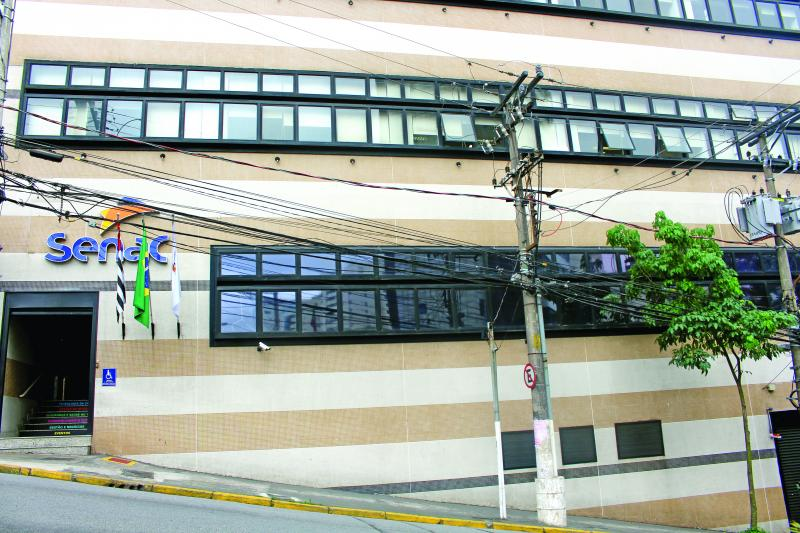

Apresentando a revista.
A "Cultura Brasil" é uma publicação eletrônica dos alunos do MED8 2o ano do Técnico em Informática da unidade Senac Lapa Tito que tem como objetivo principal divulgar os artigos, entrevistas, resenhas de professores e alunos, além de pesquisas feitas por alunos e a cada mês uma edição baseada em um tópico importante daquela época.
Com a finalidade de publicar a produção do corpo docente e de seus alunos integrantes, a "Cultura Brasil" é mensal, com pesquisas na área de tecnologia, comunicação, política e cultura. Os textos apresentados promovem o diálogo interdisciplinar entre os cursos de Ciências da natureza (Física, Química, Biologia), Ciências humanas e sociais aplicadas (Filosofia, Sociologia, História, Geografia, Linguagens (Português gramatical e Literário, Artes e Educação física), Matemática e Formação Técnica Profissional apresentando conexões entre os diversos campos do saber.
A Revista é um passo importante para a efetivação da pesquisa no Senac Lapa Tito. Esperamos que os textos publicados contribuam para a formação intelectual e a reflexão crítica dos nossos alunos, professores e demais leitores.
Os conceitos e afirmações contidos nos artigos são de inteira responsabilidade dos autores, assim como a(s) imagem(ns) inserida(s) nos artigos.
Ass. Equipe "Cultura Brasil"